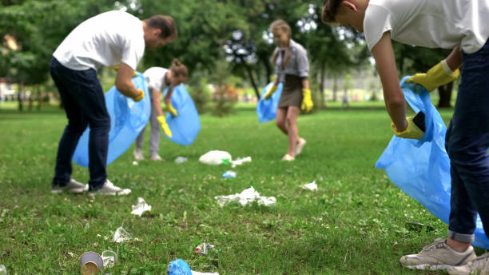
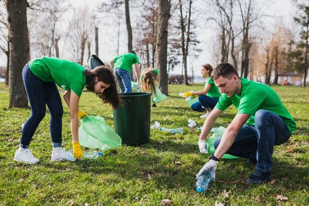
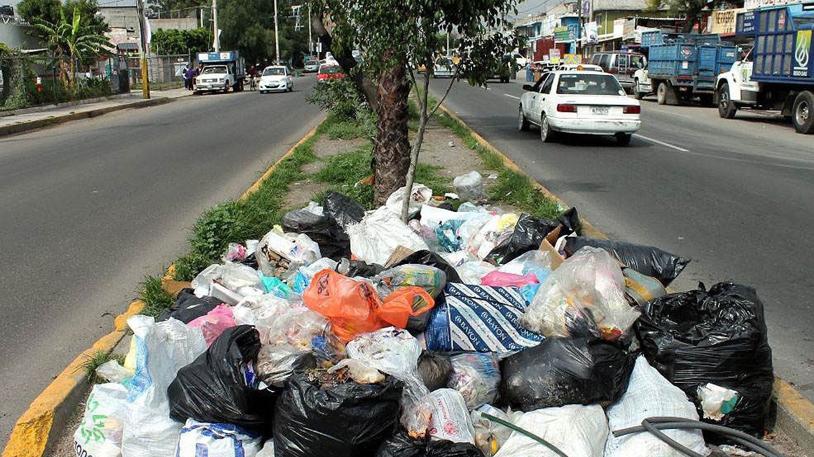

Actualmente en Querétaro hay mucha contaminación, no nada más de aire, sino que también hay mucho polvo y basura en las calles.
Nuestra misión es concientizar para evitar calles sucias y tener un Querétaro más bonito y limpio.
Propuesta Andrés: hacer una campaña que consiste en poner botes de basura con #unqueretarolimpio y poner letreros que inviten a las personas a no tirar basura y recoger, también invitar a voluntarios para recoger basura en las calles logrando así nuestra meta.
Propuesta Pato: Yo creo que lo mejor es poner máquinas de reciclaje en las cuales si echas una botella te pagan 2 pesos y así la gente va a recoger basura para poder ganar dinero.